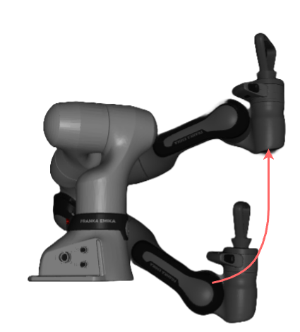
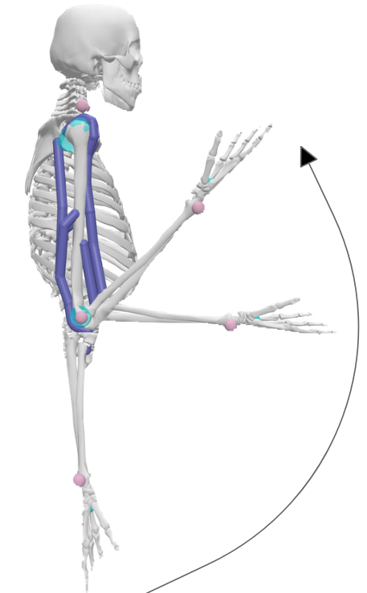

FlexiForce
EMG-Driven Admittance Control for Rehabilitation Robotics

Project Overview
FlexiForce is a simulated rehabilitation system that integrates EMG-based user feedback with an admittance controller to dynamically adjust resistance during exercise. Using a redundant robot arm modeled in MuJoCo and muscle dynamics from OpenSim, the system targets stability, responsiveness, and user-specific force adaptation in real time.
Technical Innovation
The system combines MuJoCo's physics engine for robotic simulation with OpenSim's musculoskeletal modeling tools, enabling integrated analysis of force, activation, and position. A quarter-circle trajectory simulates repetitive upper-limb motions, while force tracking and biceps activation data are logged and analyzed across timesteps.
This unified Python-based framework facilitates rapid testing and optimization of EMG-informed control strategies for personalized rehabilitation protocols.
Controller Design & Implementation
I developed the MuJoCo simulation environment using a 7-DoF Franka Emika FR3 robot imported from Google DeepMind's high-fidelity model library. The redundant manipulator was chosen to better mimic human arm motions during rehabilitation exercises.
I created a custom ergonomic handle design for single-arm bicep curl applications and implemented the complete controller architecture. This included developing the admittance control law, inverse kinematics solutions, and PD position control systems that work together to provide adaptive resistance based on real-time muscle activation feedback.
My contributions also included extensive controller gain tuning to achieve system stability while maintaining accurate trajectory tracking and responsive force adaptation.

System Architecture & Results
The controller implements an admittance control law that models the end-effector dynamics as a mass-damper-spring system. At each timestep, the system calculates deviations between measured and desired positions, adapts stiffness gains based on muscle activation feedback, and applies the resulting forces through inverse dynamics calculations.
Our results demonstrate successful integration of EMG-driven feedback with robotic control, achieving stable force application and accurate trajectory tracking. The final tuned controller showed significant improvements over preliminary versions, with proportional gains of Kp = 2000 for position control and carefully balanced force controller gains (Gp = 100, Gi = 200, Gd = 0.1) that eliminated instabilities around peak muscle activation.
The modular Python framework includes tunable controller parameters, synthetic and real activation data interfaces, and comprehensive visualization tools for analyzing applied force, trajectory tracking, and activation matching - providing a complete platform for rehabilitation robotics research and development.